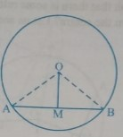
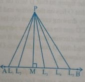
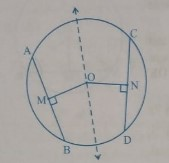
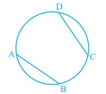
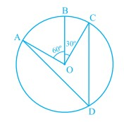
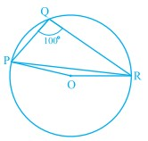
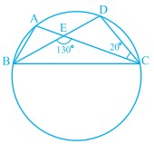

Let AB be a line and P be a point. Since there are infinite numbers of points on a line, if you join these points to P, you will get infinitely many line segments PL₁, PL₂, PM, PL₃, PL₄, etc. Which of these is the distance of AB from P? You may think a while and get the answer. Out of these line segments, the perpendicular from P to AB, namely PM in Fig. 9.8, will be the least. In Mathematics, we define this least length PM to be the distance of AB from P. So you may say that:
Note that if the point lies on the line, the distance of the line from the point is zero. A circle can have infinitely many chords. You may observe by drawing chords of a circle that longer chord is nearer to the centre than the smaller chord. You may observe it by drawing several chords of a circle of different lengths and measuring their distances from the centre. What is the distance of the diameter, which is the longest chord from the centre? Since the centre lies on it, the distance is zero. Do think that there is some relationship between the length of chords and their distances from the centre? Let us see if this is so.
Next, it will be seen whether the converse of this theorem is true or not. For this, draw a circle with centre O. From the centre O, draw two line segments OL and OM of equal length and lying inside the circle. Then draw chords PQ and RS of the circle perpendicular to OL and OM respectively. Measure the lengths of PQ and RS. Are these different? No, both are equal. Repeat the activity for more equal line segments and drawing the chords perpendicular to them. This verifies the converse of the Theorem 9.5 which is stated as follows:
Example 1: f two intersecting chords of a circle make equal angles with the diameter passing through their point of intersection, prove that the chords are equal.
Given that AB and CD are two chords of a circle, with centre O intersecting at a point E. PQ is a diameter through E, such that ∠ AEQ = ∠ DEQ. You have to prove that AB = CD.
Draw perpendiculars OL and OM on chords AB and CD, respectively. Now,
∠ LOE = 180° - 90° - ∠ LEO = 90° - ∠ LEO (Angle sum property of a triangle)
= 90° - ∠ AEQ = 90° - ∠ DEQ
= 90° - ∠ MEO = ∠ MOE
In triangles OLE and OME,
∠ LEO = ∠ MEO (Why?)
∠ LOE = ∠ MOE (Proved above)
EO = EO (Common)
Therefore, ∆ OLE ≅ ∆ OME (Why ?)
This gives OL = OM (CPCT)
So, AB = CD
Exercise 1: Two circles of radii 5 cm and 3 cm intersect at two points and the distance between their centres is 4 cm. Find the length of the common chord.
Exercise 2: If two equal chords of a circle intersect within the circle, prove that the segments of one chord are equal to corresponding segments of the other chord.
Exercise 3: If two equal chords of a circle intersect within the circle, prove that the line joining the point of intersection to the centre makes equal angles with the chords.
Exercise 4: If a line intersects two concentric circles (circles with the same centre) with centre O at A, B, C and D, prove that AB = CD (see Fig. 9.12).
Exervise 5: Three girls Reshma, Salma and Mandip are playing a game by standing on a circle of radius 5m drawn in a park. Reshma throws a ball to Salma, Salma to Mandip, Mandip to Reshma. If the distance between Reshma and Salma and between Salma and Mandip is 6m each, what is the distance between Reshma and Mandip?
Exercise 6: A circular park of radius 20m is situated in a colony. Three boys Ankur, Syed and David are sitting at equal distance on its boundary each having a toy telephone in his hands to talk each other. Find the length of the string of each phone.
You can verify this fact by cutting the arc, corresponding to the chord CD from the circle along CD and put it on the corresponding arc made by equal chord AB. You will find that the arc CD superimpose the arc AB completely (see Fig. 9.13). This shows that equal chords make congruent arcs and conversely congruent arcs make equal chords of a circle. You can state it as follows
Also the angle subtended by an arc at the centre is defined to be angle subtended by the corresponding chord at the centre in the sense that the minor arc subtends the angle and the major arc subtends the reflex angle. Therefore, in Fig 9.14, the angle subtended by the minor arc PQ at O is ∠POQ and the angle subtended by the major arc PQ at O is reflex angle POQ.
Congruent arcs (or equal arcs) of a circle subtend equal angles at the centre.
Therefore, the angle subtended by a chord of a circle at its centre is equal to the angle subtended by the corresponding (minor) arc at the centre. The following theorem gives the relationship between the angles subtended by an arc at the centre and at a point on the circle.
Proof:
Given an arc PQ of a circle subtending angles POQ at the centre O and PAQ at a point A on the remaining part of the circle. We need to prove that ∠ POQ = 2 ∠ PAQ.
Consider the three different cases as given in Fig. 9.15. In (i), arc PQ is minor; in (ii), arc PQ is a semicircle and in (iii), arc PQ is major. Let us begin by joining AO and extending it to a point B.
In all the cases,
∠ BOQ = ∠ OAQ + ∠ AQO
because an exterior angle of a triangle is equal to the sum of the two interior opposite angles.
Also in ∆ OAQ,
OA = OQ (Radii of a circle)
Therefore, ∠ OAQ = ∠ OQA (Theorem 8)
This gives ∠ BOQ = 2 ∠ OAQ (1)
Similarly, ∠ BOP = 2 ∠ OAP (2)
From (1) and (2), ∠ BOP + ∠ BOQ = 2(∠ OAP + ∠ OAQ)
This is the same as ∠ POQ = 2 ∠ PAQ (3)
For the case (iii), where PQ is the major arc, (3) is replaced by,
reflex angle POQ = 2 ∠ PAQ
Again let us discuss the case (ii) of Theorem 10.8 separately. Here ∠PAQ is an angle in the segment, which is a semicircle. Also, ∠ PAQ = 1/2 ∠ POQ = 1/2 x 180° = 90°.
If you take any other point C on the semicircle, again you get that,
∠ PCQ = 90°
Therefore, you find another property of the circle as:
Angle in a semicircle is a right angle.
In Fig. 9.17, AB is a line segment, which subtends equal angles at two points C and D.
That is, ∠ ACB = ∠ ADB,
To show that the points A, B, C and D lie on a circle,
let us draw a circle through the points A, C and B.
Suppose it does not pass through the point D. Then it will intersect AD (or extended AD) at a point, say E (or E').
If points A, C, E and B lie on a circle,
∠ ACB = ∠ AEB (Why?)
But it is given that ∠ ACB = ∠ ADB.
Therefore, ∠ AEB = ∠ ADB.
This is not possible unless E coincides with D. (Why?)
Similarly, E' should also coincide with D
A quadrilateral ABCD is called cyclic if all the four vertices of it lie on a circle (see Fig 9.18). You will find a peculiar property in such quadrilaterals. Draw several cyclic quadrilaterals of different sides and name each of these as ABCD. (This can be done by drawing several circles of different radii and taking four points on each of them.)You find that ∠A + ∠C = 180° and ∠B + ∠D = 180°, neglecting the error in measurements.
Example 1: In Fig. 9.19, AB is a diameter of the circle, CD is a chord equal to the radius of the circle. AC and BD when extended intersect at a point E. Prove that ∠ AEB = 60°.
Solution:
Join OC, OD and BC.
Triangle ODC is equilateral
Therefore, ∠ COD = 60°
Now, ∠ CBD = 1/2∠COD
This gives ∠ CBD = 30°
Again, ∠ ACB = 90°
So, ∠ BCE = 180° - ∠ ACB = 90°
Which gives ∠ CEB = 90° - 30° = 60°, i.e., ∠ AEB = 60°
Exercise 1: In the given figure, A,B and C are three points on a circle with centre O such that ∠ BOC = 30° and ∠ AOB = 60°. If D is a point on the circle other than the arc ABC, find ∠ADC.
Exercise 2: A chord of a circle is equal to the radius of the circle. Find the angle subtended by the chord at a point on the minor arc and also at a point on the major arc.
Exercise 3: In Fig. 9.26, A, B, C and D are four points on a circle. AC and BD intersect at a point E such that ∠ BEC = 130° and ∠ ECD = 20°. Find ∠ BAC.
Exercise 4: ABCD is a cyclic quadrilateral whose diagonals intersect at a point E. If ∠ DBC = 70°, ∠ BAC is 30°, find ∠ BCD. Further, if AB = BC, find ∠ ECD.
Exercise 5: If diagonals of a cyclic quadrilateral are diameters of the circle through the vertices of the quadrilateral, prove that it is a rectangle.
Exercise 6: If the non-parallel sides of a trapezium are equal, prove that it is cyclic.